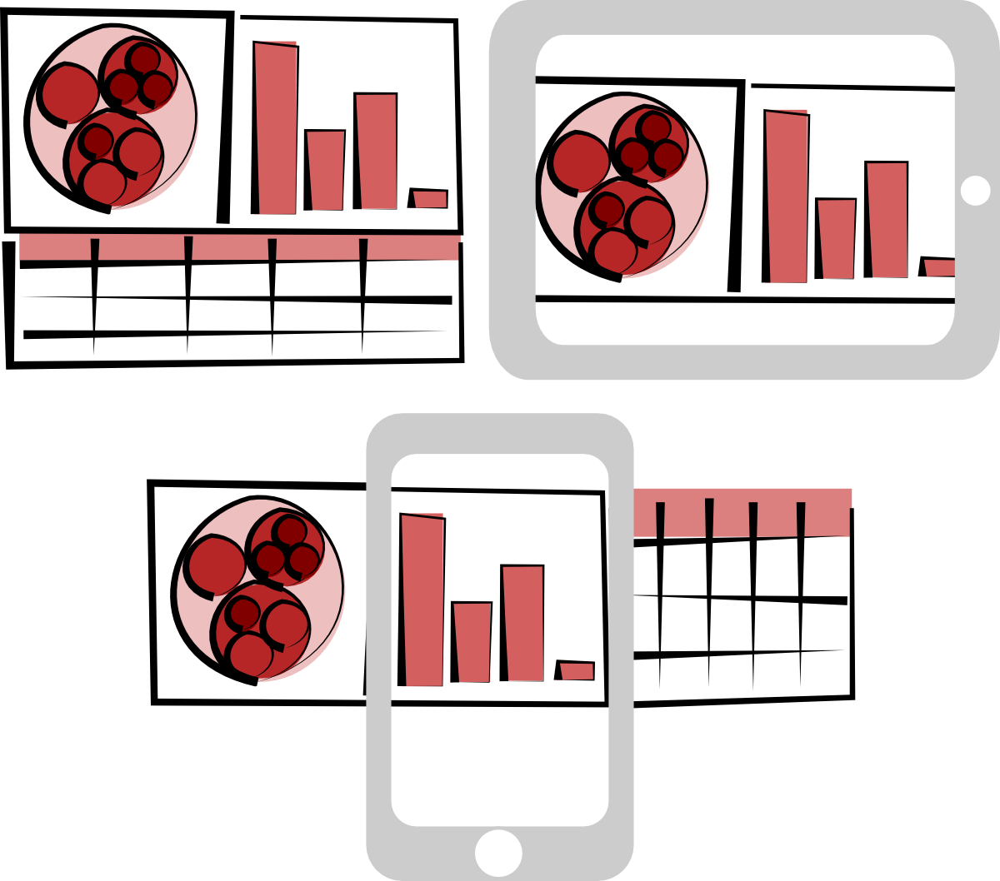
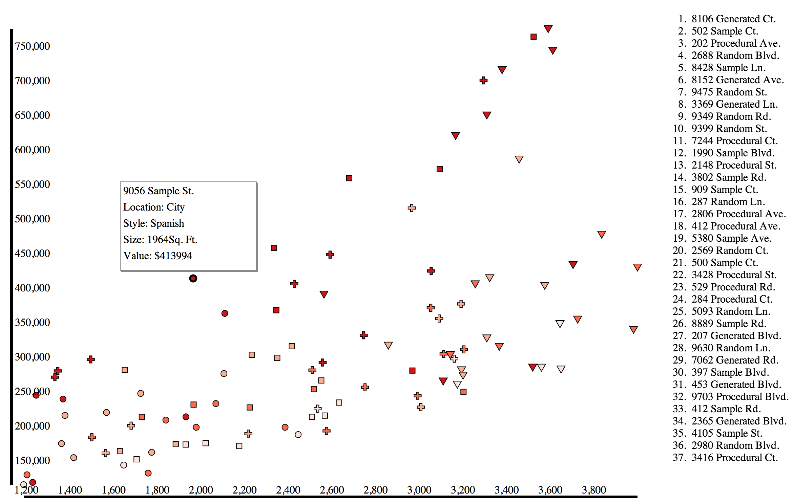
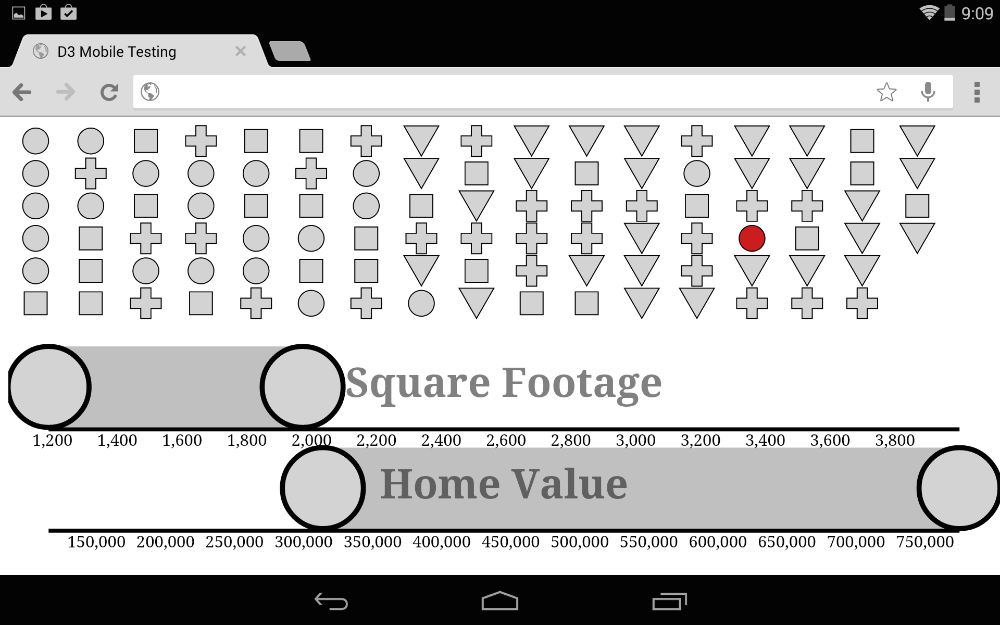
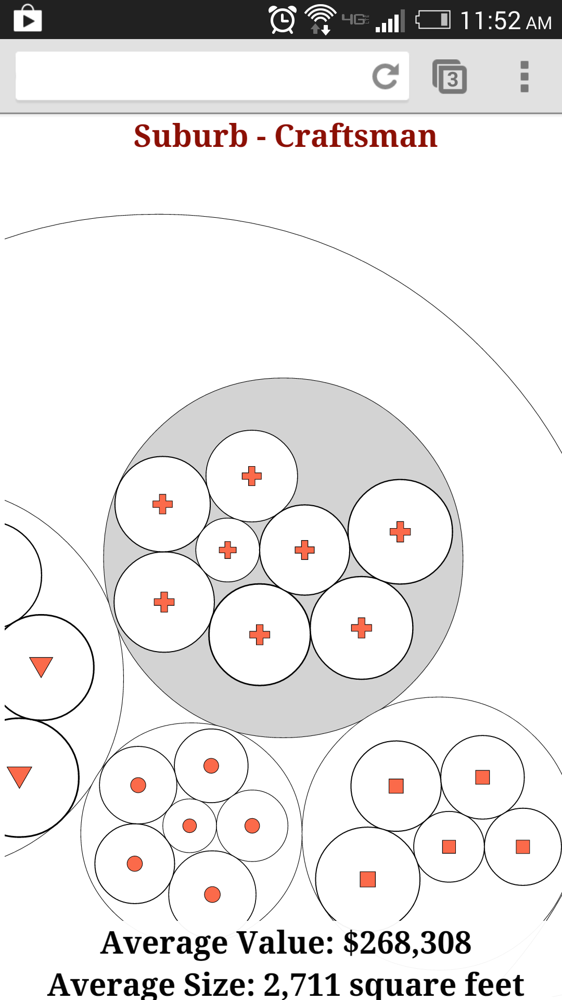

The final chapter of my book, D3.js in Action, is focused on explaining using the D3 data visualization library for mobile development. It was a bit of a stretch for me, since I hadn’t done very much mobile development, and I expected to write a short chapter outlining the functions like d3.touches that exist to handle touch interface.
The concept of creating websites that are properly formatted for various screen sizes and interaction methods is known as Responsive Web Design. Applying the same perspective to data visualization can be thought of as Responsive Data Visualization. But as I was researching responsive design as applied to data visualization, I found very little written on the subject and what I found was focused on moving the individual components of, say, a data dashboard so that it could be presented in a long-scrolling window.

The problem with this approach is that, unlike text, different types of data visualization--and any graphical display of information more generally--are more or less suitable for different sized canvases. Charts that are perfectly legible on a 15” screen can end up being useless on the screen of a 4” phone.
This is compounded by interactivity. The interaction available in a web site when accessed from the desktop has fundamental differences when accessed in a touch interface. Clickable icons can be much smaller than touchable icons, and well-established modes of interaction like panning or zooming have sometimes very different interaction expectations on touch compared to a mouse or keyboard.
So, along with using D3 to visualize how touch works, I ended up created a simple demo of responsive data visualization that provides different data presentation and interaction depending on the screen size of the device you access it with.
A disclaimer: This example was created to teach people how to code something relatively accessible in D3. As a result, it’s missing pieces that would make it a successful data visualization. One major missing piece is a legend, to explain what the symbols mean as well as what the colors mean. It’s also missing context, and while the sample real estate dataset I generated is easily engaged with, there is no real answer to the question “Why do people care about this?” Finally, there’s no good explanation of how to interact with the data visualization, so you’ll have to settle for the simple explanation in text that I give here. Were this to be released, it would need those legend, context, and tutorial elements.
Note also that I rely on screen width to detect whether the browser is on a desktop, tablet or phone, you might actually get a phone view from your tablet or a tablet view from your phone, depending on its aspect ratio and the size of the device. With that in mind, I created three distinct views into the data, each with different interaction methods and screen sizes in mind:
Desktop Version

If you access the site from a desktop browser, you should see a simple scatterplot and a list of the various datapoints represented on the scatterplot. This view maximizes the fine control and large screen of a desktop browser, allowing you to mouseover elements on the scatterplot and see their name on the list and vice versa, or click on the symbols to get more information. Obviously, the axes are rudimentary and in a final version they, along with the aforementioned more general elements, would be improved.
Tablet Version

If you access the same site from a tablet-sized screen, you get a very different view of the data. The list is gone because it would take up too much room on an already small canvas size. Instead of a scatterplot, which would be hard to read and difficult to interact with, you get a grid of all the datapoints and two brushes, allowing you to cross-brush by the same attributes that ordered the scatterplot: value and size. Because D3 brushes have built-in touch support, this is relatively easy to implement. What’s missing here is on-touch functionality for the symbols (which have increased in size to be touchable) that would bring up the same details as the modal window in the desktop version. An interesting aspect of this particular implementation is that the cross-brushing is fundamentally a simple implementation of parallel coordinates, and could serve as a gentle introduction to that powerful information visualization method.
Phone Version

Accessing the site via a phone-sized screen gives you a very different view. The datapoints are nested by their location and type attributes, and all the circles are touch-sensitive so that you can click on a circle and zoom to that grouping. Because accurate touch on a small screen requires you to have very large touchable areas, then you can only touch on circles that are one level deeper or at the same depth as you are currently at. This lets the user drill down in the groups, getting averages of size and value as they go, until they’ve zoomed in enough that the individual datapoints are large enough to be clicked and return the attributes of that datapoint. In a full version, there would need to be a mechanism to let you zoom out, as well as a mechanism that let’s you change the nesting priorities. The former could be accomplished with the pinch gesture and the latter with the rotate gesture, which are both now relatively intuitive to touch users.
This Matters
The non-desktop views are hard to design, even when you’re cutting corners on a simple example like this. I think it’s a great challenge to ask yourself what your data would look like on a phone or tablet, and what new affordances and limitations you need to account for to present the most valuable view into complex datasets like these. Responsive data visualization is a hard design challenge, but can contribute not only to making your data more accessible, but to discovery of new views and methods for presenting your data in any form. You’ll notice that there are different capabilities and different visual and interaction rhetoric embedded in each of these views, and so the goal is not to provide the same view into the data, but rather allied views that let users understand a dataset from multiple points of interaction.